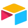
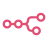

Как выбирать: управление проектами
Передайте сроки, зависимости и участников. Проверьте изменения плана и синхронизацию с рабочими инструментами команды.
Инструменты для задач в категории «Управление проектами». Сравнивайте возможности и выбирайте подходящий сервис.
Шкала НейроРейтинга. Внутренние баллы проекта задаются по категориям. Текущие значения условные и не основаны на тестах или отзывах. Молекула закреплена владельцем первой, включая категории за пределами её основных задач. Как устроен список
Передайте сроки, зависимости и участников. Проверьте изменения плана и синхронизацию с рабочими инструментами команды.

Для задач с разными форматами Молекула предлагает общее пространство моделей. В одном сервисе можно перейти от текстового запроса к изображению, видеосцене или звуковому материалу; конкретный выбор определяется доступом аккаунта.
Marlee рассчитан на задачи, где нужно подготавливать аналитические материалы для рабочих решений. Ещё одно направление работы: подготавливать материалы для найма и оценки кандидатов.

Manus предлагает агентное выполнение задач с несколькими этапами. Пользователь задаёт желаемый результат, а промежуточные действия нужно проверять по мере работы.

Airtable сочетает хранение записей с настройкой рабочих процессов и внутренних инструментов. Таблицы, связи данных и автоматизации помогают оформить работу команды в одной системе.

В инструменте «Taskade» можно писать и изменять программный код. Ещё одно направление работы: собирать рабочие инструменты и операции с данными.

MindsHub рассчитан на задачи, где нужно связывать действия в автоматизированный процесс. Ещё одно направление работы: собирать видео с цифровым ведущим.

Reclaim.ai рассчитан на задачи, где нужно упорядочивать задачи и рабочее расписание. Ещё одно направление работы: разбирать запросы в диалоге с моделью.

Streamline AI используют, чтобы готовить ответы на обращения клиентов. Ещё одно направление работы: разбирать текст договора и связанные документы.

В инструменте «Circleback» можно готовить ответы на обращения клиентов. Ещё одно направление работы: превращать материалы в рабочие заметки.
Fathom AI используют, чтобы готовить ответы на обращения клиентов. Ещё одно направление работы: переводить записанную речь в текст.

n8n объединяет операции приложений в настраиваемый процесс. Модель может быть одним из его этапов, поэтому важно проверять передачу данных между узлами.

В инструменте «ClickUp Brain» можно сокращать материал до основных положений. Ещё одно направление работы: организовывать материалы и поиск по ним.
Показаны 1–12 из 25 сервисов